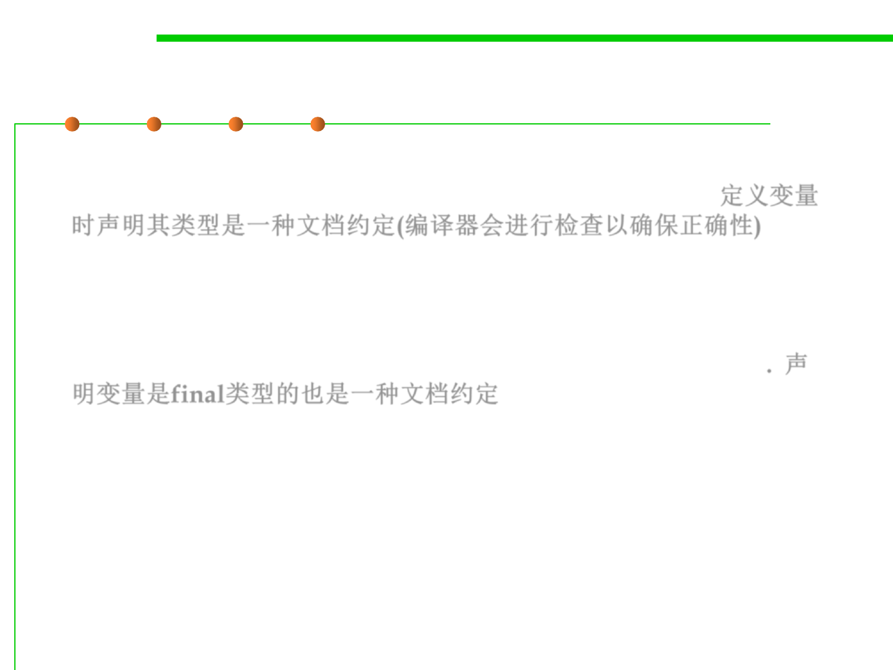

Documenting Assumptions
3.2 Designing Specification
▪ Writing the type of a variable down documents an assumption
about it: e.g., this variable will always refer to an integer. 定义变量
时声明其类型是一种文档约定(编译器会进行检查以确保正确性)
– Java actually checks this assumption at compile time, and guarantees that
there’s no place in your program where you violated this assumption.
▪ Declaring a variable final is also a form of documentation, a claim
that the variable will never change after its initial assignment. 声
明变量是final类型的也是一种文档约定
– Java checks that too, statically.
▪ How about the assumptions of functions / methods?